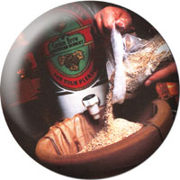
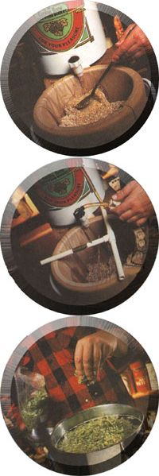
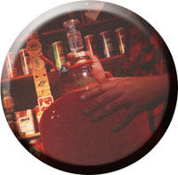
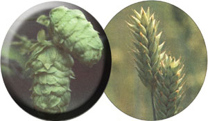

SEASONS 'S CHEER
Would you like a tall cold one of professional-quality brew at a 50% discount? I thought you might.
Brewing your own beer,rather than participating in the collective lunacy of shelling out $20 or $30 a case for a product of often questionable quality, has long been a favorite forMOTHERreaders. Basic brewing procedures have been illustrated in both the January/February 1988 and the October/November 1992 issues, much to the pleasure of both the cost-conscious as well as those who just want to make the most delicious beer they've ever tasted. George Hummel, a member of an old Philadelphia brewing family as well as a nationally recognized beer judge and award-winning brew master at Home Sweet Homebrew in Philadelphia, PA, takesMOTHER'Snovice brewers one step further, offering advice on all-grain recipes and a cheat sheet on imitating your favorite store-bought brands.
Ever since the Mayflower dropped its anchor at Plymouth Rock because their beer supplies had run low, the tradition of homebrewing and tavern brewing has played an indispensable role in early American history. Our Founding Fathers were brewers, including Washington, Jefferson, and Sam Adams. In fact, most of the debates by the Continental Congress took place not in Independence Hall but at City Tavern in Philadelphia, over a tankard of ale or porter.
Prior to the 1800s, all beers produced were ales (beers that ferment at room temperature)-until it was discovered in Northern Europe that certain yeast strains preferred a colder temperature. These coldfermenting yeasts produced a clearer beer with a clean, dry taste. This fermentation took longer and these beers became known as "lagers" (literally, to store ). Lager beers were seasonal beers, produced only in the winter months until refrigeration was invented. With the advent of industrial cooling, year-round lager production became possible. Immigrants from Northern Europe opened many of these lager breweries. Hundreds of small local breweries sprang up in cities with large immigrant populations, brewing good, fresh beer.
In 1919, catastrophe struck. With the stroke of a pen the Volstead Act made Prohibition the law of the land. Breweries throughout the country went belly-up. American brewing went underground. Horrible-tasting brews were produced using inferior ingredients and equipment (this subsequently lent a bad name to homebrewed beers). Concern during these dark days of brewing was not for the taste or quality of the beer but rather how good the buzz was. At the close of Prohibition, our remaining breweries began to produce beers again, but their numbers had been greatly reduced by years of inactivity. Larger and larger breweries swallowed up smaller regional establishments, producing beer with less and less character but progressively higher profit margins. Dealing with fiscally hard times, brewers decided to cut back on the main ingredients. They assumed that after years of vile homebrews, no one would notice a more watered down taste. The brewers found themselves correct in their assumption. Further cutbacks in ingredients occurred with rationing during the Second World War. At the end of conservation, the brewers left the recipes at the wartime levels. Again they correctly assumed that no one would notice that their beer was tasting more like water.
By the 1970s the onslaught of light beers began. Not only were the beers more watered down, but advertising campaigns extolled how products tasted less and less like beer. "No aftertaste!" was often exclaimed. "No taste at all" would be more appropriate. During the 80s and 90s, various clear beer and beerlike beverages, tasting less and less like beer, hit the market. As P.T. Barnum once said, "No one ever lost money underestimating the taste of the American public:"
At the same time, a revolution occurred with two forms of craft brewing. Small breweries began to produce quality beers for a small appreciative audience of beer lovers. At this point, microbrewing has been experiencing a 40 percent annual growth. Also, the megabrewers have found that their sales have gone flat. Subsequently, many of the megabrewers have introduced beers that are styled after microbrews. At the same time that microbrewers began to blossom, brewing took yet a further retrostep and people began, once again, to home brew. But "premium" or not, commercial beers often contain chemical additives and the consumer is kept in the dark as to their presence due to antiquated labeling laws. Besides the use of chemical additives, megabrews are loaded with cheap adjunct grains. Microbrews and imports offer improved taste but at a high price. These beers are often mishandled, often stale (since they are expensive, they often don't move as quickly through the distribution system), and sometimes arrive to your house in poor condition. There's nothing worse than laying down $30 for a case of beer only to find it has spoiled. With a little practice, you can produce a beer as good and eventually better than beers produced by commercial brewers.
Where's the Craft?"No aftertaste!" the megabreweries claim. "No taste at all" would be more like it.
A homebrewer has a unique perspective on the world of beer; a very small brewery and a very small audience to please. A homebrewer is not concerned with the mass appeal of the beer, but the individual appeal. Most homebrewers, in fact, start to find it annoying when too many of their friends develop a taste for their beer. The only recourse (besides ditching your friends) is to spread the gospel of homebrew. "You know if you like homebrew that much, maybe you should make some too. I'll show you how-it's easy."
Homebrewers also have a personal relationship with their beer. They learn that it is alive and requires cultivation and love just like tilling the earth. A homebrewer is taking a living entity and, with the hand of man, creating something unique.
Getting Started
Brewing a world-class beer at home is really quite easy. First, find a good homebrew supplier. If there is one in your immediate area, your interests can be best served there. If no local supplier is available, find a good mail-order supplier that is reasonably close and has a good reputation. Avoid fly-by-night mail-order-only operators with "hobby hours"-they often offer bargains at the expense of quality and service. Supplies, especially ingredients, are bulky and become costly to ship. If you find a source that is within two or three UPS zones. You won't spend a fortune in freight.
Brew suppliers often offer a starter kit and ingredient packs for beginning brewers. These items are usually discounted from the individual component selling price. With a few caveats, this usually sets the novice up with the essentials. Be sure the recipe and ingredients provided are "all malt." Some recipes will call for pounds of corn sugar. Also be sure that no sugars have been added to the cans of malt (check the label). If the recipe calls for more than 3/4 to 1 cup of corn sugar added only at bottling time, don't use it (Note: certain English or Belgian recipes you'll encounter may call for small amounts of brown or candy sugars-that's OK). If the supplier insists that pounds of corn or table sugar are needed to brew, find another one. If you're going to the trouble to brew your own beer, you'll want to brew the best beer possible. Beers brewed with large amounts of sugar are thin with a cidery taste. Do not follow a recipe that calls for "no boiling."
Always use brewing yeasts, never baking or all-purpose yeast. Liquid yeasts are best. They are pure and are available in numerous styles. They are more expensive to buy but can be repitched-actually mak ing them cheaper in the long run. It is not advisable to repitch dried yeasts as they mutate quickly. If buying dry yeast, the ones produced by Yeast Lab and Lallemand are usually reliable.
Buying caveats on brewing equipment are as follows: Be sure the system is two stage, using either two foodgrade plastic buckets or a bucket and a glass car-boy (large glass bottle). Besides a siphon hose, be sure the kit comes with a racking tube and a bottle filler. These items make brewing a breeze. If they're not in the kit, buy them when you get it. Avoid hammer c ap pers, they are awkward and danger ous. A twin lever capper is much more effective. Finally, be sure the kit includes a hydrometer, an instrument that measures sugar content. Basic equipment with ingredients should cost between $60 and $70. Less, if you do a bit of scrounging.
There are several systems available that claim you can brew, ferment, and dispense the beer from the same container. If that sounds too good to be true, it's because it is. Avoid these as you would any product that lulls you with an infomercial.
Besides a brew kit and some ingredients, you'll need some ordinary household items. A large stainless steel or enamel-on-steel pot (ideally 25 to 30 quart), a long handled spoon, a thermometer, two cases of clean delabeled amber long-neck beer bottles (use nontwist-off), and a sanitizer (use either chlorine bleach or Iodophor). At least initially, use the ingredients recommended by your supplier. For further information on beginner's homebrewing refer to MOTHER, January 1988, "Basic Homebrewing" by Byron Burch.
Once folks are up and brewing, they begin to try and duplicate some of their favorite commercial beers. This is how a brewer can really test his skills against a known benchmark. Of course it's just as much fun to play around and brew freeform. Some of the most commonly sought recipes follow.
Too Complicated? Not at all! Justremember that you brew beer just like coffee.
IntermediateBrewing Procedures
The recipes produce five gallons of beer. The following procedures hold for each of these recipes. (1) Water: Unfiltered municipal or well water should be boiled 10-15 minutes prior to brewing with it. If using filtered water, heat to 160°F. If you are using boiled water, allow it to cool to that temperature. (2) Grains: Coarsely crack the grains or purchase those that have been premilled. Put the grain in a loose-fitting nylon or cheesecloth bag. Place the grain bag in the 160-degree water. Allow to steep for 30-60 minutes at a temperature between 150 and 160°F. Remove the grains and discard them. Brewing wastes, by the way, are great for bread making and mix well with compost or animal fodder, so don't just heave them into the garbage. (3) Boiling: Once the grains have been removed, heat the kettle to a boil. Remove the kettle from the burner and completely dissolve the malt extract into it. Return the kettle to the stove and heat to a boil again. Add the bittering hops and boil for 60 minutes. During the last 15 minutes of the boil, add a teaspoon of Irish moss (a natural seaweed that aids clarification). At the end of the boil, add the aroma hops. (4) Fermenting: Once the boil has ended, all equipment that comes in contact with the beer must be sterilized. Cover and force cool to 75°F. Rack the beer into a sterilized fermenter and add the activated package of yeast (follow the instructions on the package). (5) Secondary ferment: When the krausen (the crown of foam that forms on fermenting beer) falls, rack to a secondary fermenter with the dry hops already in it. (6) Bottling: When ferment is complete, rack to a bottling bucket and add the priming sugar dissolved in boiled water. Bottle and cellar for a month. Enjoy!
Advanced Brewing
Many brewers, after some experience using malt extracts, switch to "all-grain brewing." This means that, rather than allowing the malt extract manufacturer to produce the main fermentables for the beer, these brewers do it themselves. The amount of time required to brew the beer is tripled, but the cost per batch is cut in half from brewing with malt extract (which is already half the cost of buying commercial beers!). The other advantage of grain brewing is the amount of control the brewer retains over the process. This control can also be the downfall of the grain brewer because you're working without a net.
Grains and water (called mash) are held at a temperature between 150 and 155°F or at a progressive series of temperatures leading up to that range. The steeping of grain at this temperature for up to 90 minutes allows the enzymes in the grain to convert the starches to sugar. It is this malt sugar that the brewer wants to ferment. Once this conversion occurs, the grains are sparged (rinsed) and the wort (pronounced wert, it means unfermented beer) is collected. This sweet wort (wort without hops) is treated the same as when you have dissolved malt extract in water.
A lauter tun is the device that holds the mash and allows the sparge to occur. Some folks will make a lauter tun by nesting a pair of food-grade plastic buckets. The inner bucket has had thousands of tiny holes drilled in its bottom, while the outer one is affixed with a faucet near the bottom. Other folks (myself included) will use a five or ten-gallon cylindrical cooler (see pages 55 and 56) fitted with a straining false bot tom. A stainless steel vegetable steamer, a nylon liner bag, or an inexpensive false bottom (made for the purpose of this conversion and available from homebrew suppliers), all work quite well. The advantage of the cooler is its insulation; mashing, lautering, and sparging can be carried out all in one vessel. A three-tiered system can then be set up. The brew kettle sits on the stove to heat the water, which is then drawn into the lauter tun sitting on a stool in front of the stove. The lauter tun can then be drained and sparged into a catch bucket resting on the floor. The wort collected in the catch bucket is returned to the kettle on the stove for boiling. If all this sounds a little complicated, just refer to the photos on page 56. Envision a giant drip coffee maker-you brew beer just like coffee.
The idea of the sparge is to rinse the grains of as much malt sugar as possible. This is achieved by slowly drizzling water that is slightly hotter than the mash over the grain bed, while slowly draining the mash tun at the same pace that the sparge water is being introduced. This is continued until the sugars are virtually all removed. This collected wort is then hopped and boiled as in the earlier recipes. It is recommended that beginning and intermediate brewing be mastered before attempting all-grain beers.
Basic All-Grain Recipe for 5 Gallons
Perhaps the easiest and most familiar style of beer to produce for your first allgrain effort is a classic English pale ale. First of all, a single-temperature mash is the traditional procedure. Second, the beer you brew will really shine, since British beers are frequently stale by the time they make it to our refrigerators.
Grain Bill:
8 lb 2-Row Pale Malt (preferably British)
8 oz 60 Lovibond Crystal Malt (preferably British)
Hop Schedule:
1 1/2 oz Northern Brewer Hops at 60 minutes
1 1/2 oz Kent Goldings or Fuggles Hops at the end of boil
Yeast:
Wyeast #1098 British Ale
Steep the grain in 2 1/4 gallons of 172°F water. The hot water and cool grain should cause the temperature to drop. Stabilize between 152 and 154°F. Keep a quart or two of both boiling and chilled water handy and add some water should the temperature end up a little high or low. Add the grain and water slowly, in small amounts, stirring constantly as to have no dry spots or clumps. The mash at this time should resemble porridge. Allow to stand for 90 minutes during which time starch conversion should occur. If you wish to confirm conversion, perform a starch test. Remove a teaspoon or two of the mash on a white saucer and allow it to cool. Place a drop or two of iodine on it. If the iodine turns blackish purple, there is starch present and the conversion is not complete. Wait and retest. Discard the samples. When conversion is complete (no change in the iodine's appearance), sparge with 4 1/2 gallons of 168-170°F water. Slowly spray water over the grain bed while allowing the mash to run off at the same pace. Collect 5 1/2 to 6 gallons of sweet wort. Proceed as with intermediate recipes.
Few brewers go theextra mile, but there'll always be fanatics.
Scratch Brewing
There is a small, dedicated hard core of brewers who feel that all-grain brewing doesn't give them enough control over the brewing process. These folks go the extra mile and grow/process their own materials.
Hop cultivation is particularly easy. In fact, once a vine is well-established it's hard not to grow hops. So don't put this persistent little vine in an area of your garden where you may change your mind in a year or two. For beer brewing, we are only interested in unfertilized female flowers. For this reason, hops are usually cultivated from root cuttings called rhizomes instead of seeds. Hop rhizomes are available from homebrew suppliers and some garden centers in early spring. Be sure to know what variety hop you have. The rhizomes should be planted as soon as the ground thaws. If planting more than one rhizome, leave the mounds about three feet apart. Lay the roots horizontal, six inches below ground surface in loamy soil in an area that gets lots of sun. Water daily if there's no rain. When the first shoots appear, cut back all but the three strongest. The hops will need strings, wires, or a trellis to train on, as they can climb upwards of 18 feet tall! (They make wonderful plantings around a gazebo or deck.) Hop cones are picked in September when they are mature. They should be laid on a raised screen, away from direct sunlight, with warm circulating air, and agitated and rearranged frequently until dry. Once dry, store in an airtight container and refrigerate or freeze. Anyone with a garden can easily grow their own hops. The vines are ornamental and make for a great conver sation piece. A well-established vine at the peak of growing season can grow up to a foot a day. So kick back with a homebrew and watch your hops grow! For a complete guide to hop cultivation, pick up the book Homegrown Hops by David R. Beach, published by David R. Beach.
Very few brewers go the extra mile and grow and malt their own grains. First, you need to have considerable acreage devoted to barley. Second, you need to grow two-row summer barley, which produces the best possible malt for brewing. Malting is a delicate art that takes years of practice and constant attention to master-commercial malt houses run both day and night shifts to monitor the process. But, if malting and growing barley tickles your fancy, refer to Zymurgy magazine (the magazine of the American Homebrewers Association), Volume 8, Number 4, Special Grain Brewing Issue 1986-"Home Malting for Homebrewers" by R.C. Dale. Also read Volume 12, Number 2, Summer 1989-" Scratch Brewing the Belgian Browns" by Michael Matucheski, which will provide some insights into this particular area of brewing.
Brewing in America has come full circle. Cheers to the independent.
Recommended Reading
Periodicals
Zymurgy, published 5 times a year by the American Homebrewers Association, Box 287, Boulder, CO 80306. Brewing Techniques, published 6 times a year by New Wine Press, Box 3222, Eugene, OR 97403-9917.
For Beginners.
Brewing Quality Beers (Joby Books) by Byron Burch . Brewing The World's Great Beers (Storey Communications) by David Miller. The New Complete Joy of Homebrewing (Avon Books) by Charlie Papazian. Homebrewing: The CAMRA Guide (CAMRA) by Graham Wheeler.
For Advanced Brewers;
The Complete Hand Book of Brewing (Storey Communications) by David Miller. The Homebrewer's Companion (Avon Books) by Charlie Papazian. Brew Your Own Real Ale At Home (CAMRA) by Wheeler & Protz.
"WHAT INGREDIENTS WILL MAKE MY BEER TASTE LIKE"
Would you like a tall cold one of your favorite premium brand at a 50% discount? Just try to tell your homebrew made with these ingredients from the originals (see "Intermediate Brewing Procedures" on this page for the brewing process).
"...SIERRA NEVADA PALE ALE?"
Grains:
8 oz 2-Row Wages Malt
8 oz Dextdne (Cara-pits) Malt
8 oz 40 Lovibond Crystal Matt
Extract: 8 lb Alexander's Sun
Country Pale Malt Extract
Bittering Hops:
1 1/2 oz Perle Hop Pellets
Aroma Hops:
1 1/2 oz Cascade Hop Pellets
Yeast:
Wyeast #1056 American Ale
Dry Hops:
1/2 oz Cascade Hop Pellets
Priming Sugar:
3/4 cup dextrose (corn sugar)
or
1 cup Light Dry Malt Extract
"...SAMUEL ADAMS BOSTON LAGER?"
Grains:
8 oz 2-Row Klages Malt
8 oz Munich Malt
1 lb 20 Lovibond Crystal
Malt
Extract:
8 lb Alexander's Sun
Country Pale Malt Extract
Bittering Hops:
1 1/2 oz Northern Brewer Hop
Pellets
Aroma Hops:
1 1/2 oz Hallertau Mittlefreub (substitute Hersbrucker or Crystal if not available)
Yeast:
Wyeast #2206 Bavarian
Lager (see note below)
Dry Hops:
1 1/2 oz Hallertau Mittlefreuh (see substitutions above)
Priming Sugar:
3/4 cup dextrose (corn sugar)
or
1 cup Light Dry Malt Extract
Note:
Ferment one week at
50-60°F., four weeks at
30-40°F. If cold fermenta tion is not possible use Wyeast #1007 German Ale.
"...PETE'S WICKED ALE?"
Grains:
8 oz 2-Row Klages Malt
8 oz 60 Lovibond Crystal
Malt
8 oz Special Roast Malt
4 oz Chocolate Malt
Extract:
6.6 lb Northwestern Gold
Matt Extract (unhopped)
Bittering Hops:
1 1/2 Brewer's Gold Hop Pellets
Aroma Hops:
1 oz Brewer's Gold Hop
Pellets
Yeast:
Wyeast #1056 American Ale
Dry Hops:
1/2 oz Brewer's Gold Hop
Pellets
These are some of the beers that I am commonly asked how to imitate. The recipes are my own and are in no way affiliated with the actualbreweries, which I hold in the highest regard.
|
|
 |
 |
|
 |
 |
|